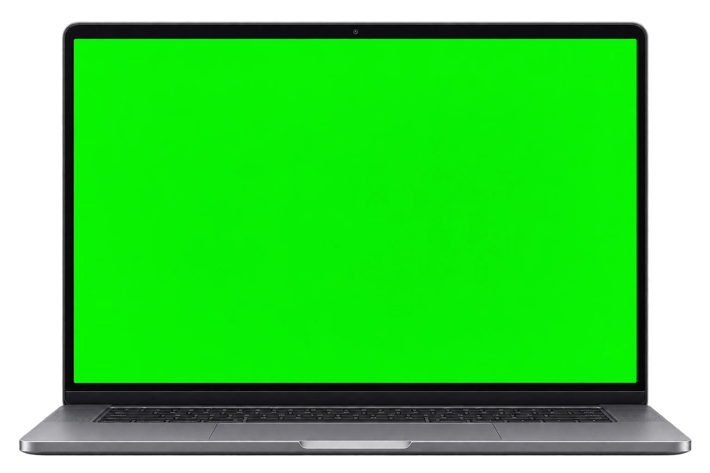

LIENZO / Composición adaptable
Mockup multidispositivo
Presenta un proyecto en portátil y móvil con capturas o MP4. Marca la misma acción en dos grabaciones y compara cómo se ve en cada pantalla.
03 vistasHTML · CSS · JS
Vista previa
Ambos

Atlas01 / Estudios visuales
Cuaderno visual
Otra forma de mirar.
ExplorarEstudios visuales01 / 03
Atlas01
Cuaderno visual
Otra forma de mirar.
ExplorarEstudios visuales01
Cómo llevarlo a tu proyecto
Descomprime el ZIP y abre index.html. Personaliza la demo y descarga el HTML editado. Conserva los estilos, scripts, fuentes y avisos junto a él. Los cambios y favoritos de la demo se reinician al recargar.